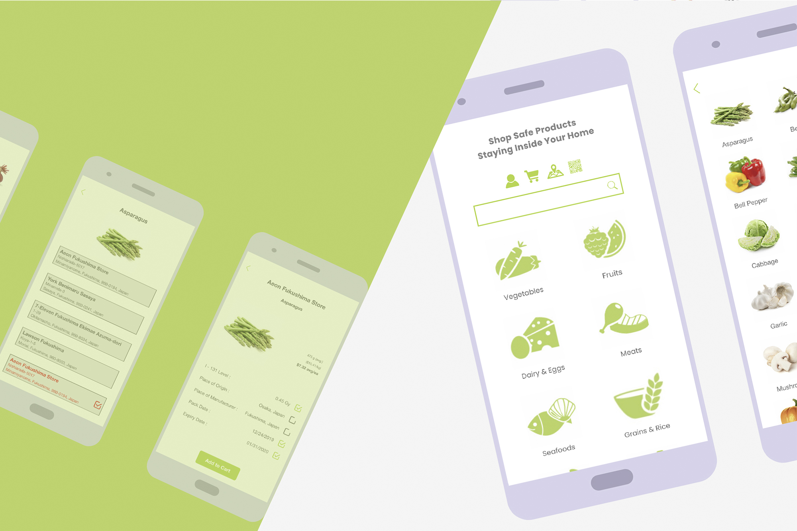
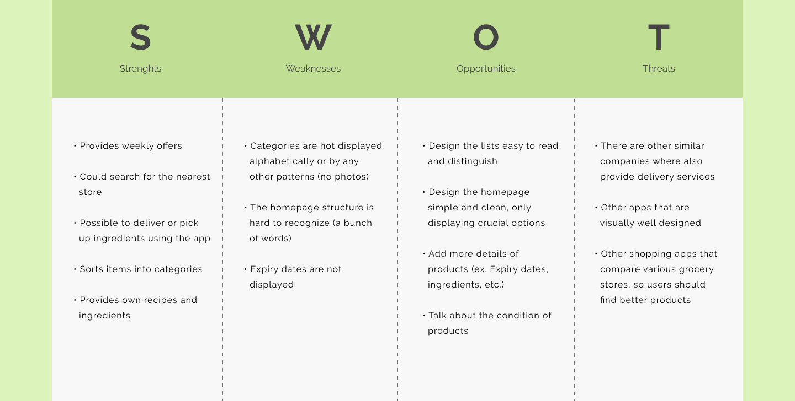
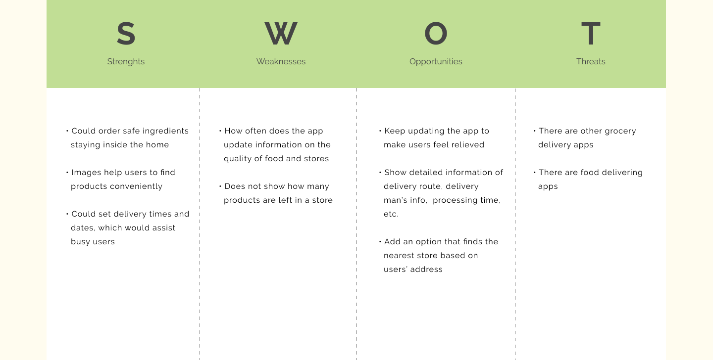
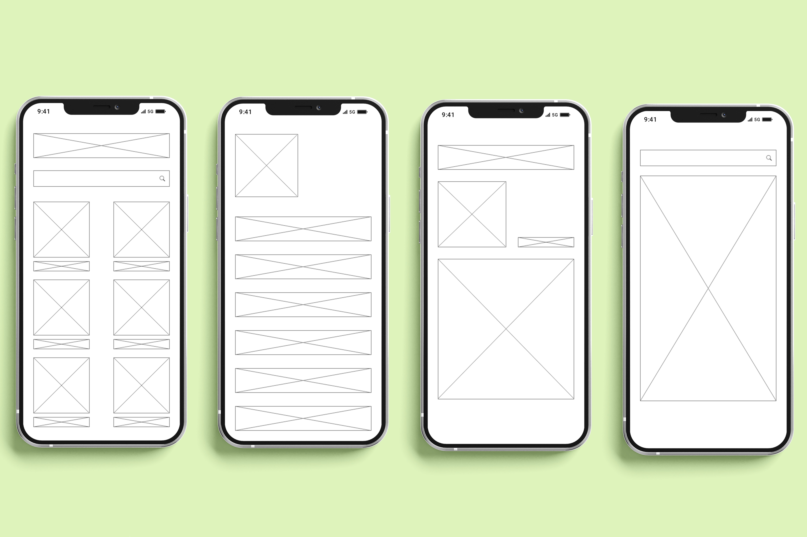
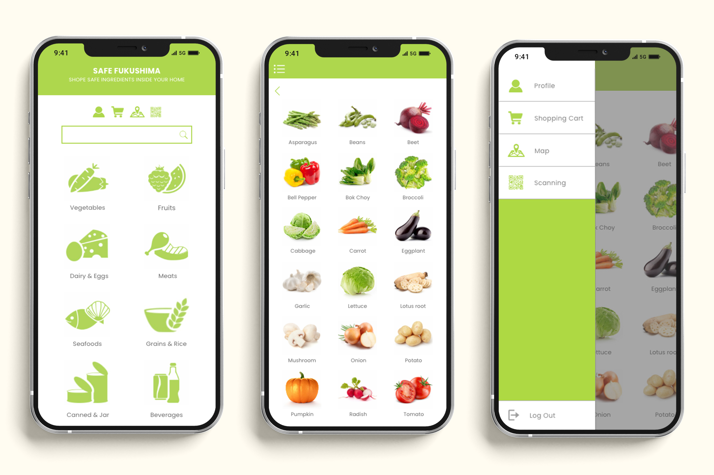
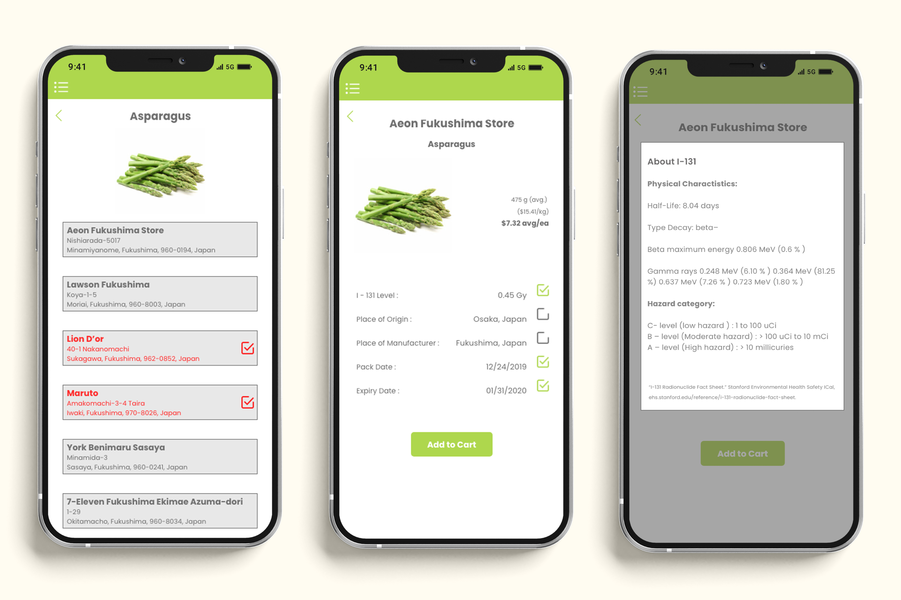
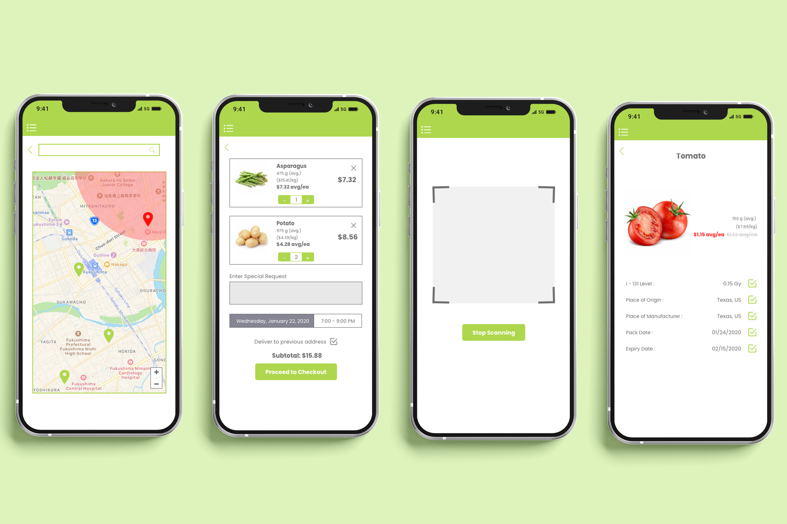

<!DOCTYPE html>
<html>

<head>
    <meta charset="UTF-8">
    <meta name="viewport" content="width=device-width, intitial-scale=1">
    <link rel='stylesheet' text='text/css' href='vendors/css/normalize.css'>
    <link rel='stylesheet' text='text/css' href='vendors/css/grid.css'>
    <link rel='stylesheet' text='text/css' href='vendors/css/ionicons.min.css'>

    <link rel='stylesheet' text='text/css' href="resources/css/style.css">
    <link rel="stylesheet" href="resources/css/queries.css">

    <link rel="preconnect" href="https://fonts.gstatic.com">
    <link href="https://fonts.googleapis.com/css2?family=Raleway:ital,wght@0,300;0,400;0,500;0,600;1,300;1,400;1,500;1,600&display=swap" rel="stylesheet">
    <link rel="preconnect" href="https://fonts.gstatic.com">
    <link href="https://fonts.googleapis.com/css2?family=Brygada+1918:wght@400;500;600;700&display=swap" rel="stylesheet">

    <link rel="stylesheet" href="https://use.typekit.net/qlj0vch.css">

    <title>Su Hyun Jung</title>
</head></html>


<body>

    <div class="content">

        <header>
            <div class="row index-header">

                <div class="row col span-1-of-3 index-btn">
                    <a href="projects.html" class="button">&nbsp;Portfolio&nbsp;</a>
                    <a href="about.html" class="button">&nbsp;About&nbsp;</a>
                </div>

                <div class="row col span-1-of-3 index-name">
                    <a href="index.html" class="index">SU HYUN JUNG</a>
                </div>

                <div class="row col span-1-of-3">
                    <h3>the <em>INTERACTION DESIGNER</em></h3>
                </div>
            </div>
        </header>
        
        <section>
          <div class="content">
          
           <div class="row relief-background">
            <div class="col span-1-of-2 individual-title">
                
               </div>
               
               <div class="col span-1-of-2 individual-title">
                   <h2><em>Disaster Relief Application for<br>Safe Fukushima</em></h2>
                   <h4>Sep-Oct. 2019</h4>
                   <p>Safe Fukushima is an application to relief Fukushima Daiichi Nuclear Power Plant disaster. 8 years after the 
Fukushima Daiichi nuclear disaster, few number of people have started returning to their home in Fukushima. Even though 8 years have passed, they are still exposed to danger of the radiation. This is the application showing information of food quality such as radiation level, place of origin, expiry date, etc as well as the grocery’s safety based on the radiation exposure and providing delivery service as well.</p>
               </div>
               </div>
               
               <div class="row relief-main">
               <div class="row relief-yellow">
                   <h2>Brief Intro to &#39;&#39;Fukushima Daiichi Nuclear Disaster&#39;&#39;</h2>
                   <p>• A magnitude 9 earthquake occurred on the east coast of Japan on 11 March 2011, bringing a tsunami<br>
• Due to the tsunami, the Fukushima Daiichi Nuclear Power • Station(FDNPS) lost the core cooling capacity<br>
• FDNPS released radionuclides into the air on 12-15 March 2011<br>
• The accident rated as Level 7 on the International Nuclear Events Scale<br>
 • Although more than 8 years have passed, the disaster is still in the process of recovery
</p>
               </div>
               
               <div class="row relief-green">
                   <h2 class="relief-research">Research Insights</h2>
                   
                   <div class="row relief-insights">
                       <h3>Japanese Government</h3>
                       <p>• Alerted residents who are living within 20km from Fukushima Daiichi power station to stay inside the house <br>
• Published the guideline of potassium pills to help people who are exposed to radiation<br>
• Restricted travelers<br>
• Checked the level of radiation of food from Fukushima,  Ibaraki and Chiba before the market sale <br>
• Finally, evacuated residents who are living within 
       20-30km from the power plant
</p>
                   </div>
                   
                   <div class="row relief-insights">
                       <h3>Other Global Communities</h3>
                       <p>• WHO (World Health Organization), the United Nations Food and Agricultural Organization and the International Atomic Energy Agency had been kept updated on food safety guidelines<br>
• WHO had kept monitored the condition of food, water, vegetables, milk, etc.<br>
• WHO warned infants to be extra cautious, warning long-term impact of radiation exposure<br>

</p>
                   </div>
                   
                   <div class="row relief-insights">
                       <h3>SWOT Analysis for Existing Application <em>Save on Food</em></h3>
                       
                   </div>
               </div>
               
               <div class="row relief-yellow relief-insights relief-swot">
                  <h2>SWOT Analysis of <em>Safe Fukushima</em></h2>
                  
              </div>
               
              <div class="row relief-green relief-wireframe">
                  <h2>Wireframe of the Application</h2>
                  
                  <h3>Main page, List of Groceries, Detailed Info of Products and Search Page</h3>
              </div>
              
              <div class="row relief-yellow relief-swot">
                  <h2>How the Application Works</h2>
                  
                  <div class="row relief-app">
                  <div class="col span-1-of-2">
                  
                  </div>
                  <div class="col span-1-of-2">
                  
                  </div>
                  </div>
                  
                  <p>• Four Different Menu Icons: Profile, Cart, Map, and Scanning<br>

•
The App Provides Search Function for Products / Categorized Menu<br>

•
Menu Icon on the Top Left Corner Navigates Users to Move to Profile Shopping Cart, Map and Scanner<br>

•
Detailed Description of I-131 referred from Stanford University pops-up when (i) information above I-131 level is pressed</p>
              </div>
              
              <div class="row relief-green relief-wireframe">
                  <h2>Additional Functions</h2>
                  
                  <p class="relief-insights1">• Integrated Map to Find Grocery Stores with Search Capability and Marks Area with High Radiation in Air with Red Circle in the Map<br>

•
Option to Select Delivery Date and Time and Users are able to Leave Special Request to the Store and Delivery Service<br>

•
Users can Scan a Barcode or a QR Code on the Product to View Detailed Information</p>
             
             <div class="row">
                    <div class="col span-1-of-2 clickable-link1">
                        <a href="https://xd.adobe.com/view/624c587c-4d70-40d3-6e13-139c76dcd0d6-147d/">Clickable Wireframe</a>
                    </div>
                    <div class="col span-1-of-2 clickable-link2">
                        <a href="https://xd.adobe.com/view/2285e18d-6f47-4243-49c8-67157cbb710c-54b4/">Clickable Prototype</a>
                    </div>
                </div>
              </div>
                
              </div>
           
           </div>
        </section>
       
      <footer>
            <div class="row">
                <div calss="col span-1-of-2">
                    <ul class="social-links">
                        <li><a href="https://www.facebook.com/profile.php?id=100001963323502"><i class='ion-social-facebook'></i></a></li>
                        <li><a href="https://www.instagram.com/suestudi_o/"><i class='ion-social-instagram'></i></a></li>
                        <li><a href="mailto:suhyun9861@gmail.com"><i class='ion-email'></i></a></li>
                    </ul>
                </div>
            </div>
            <div class="row">
                <p>Copyright &copy;2021 by Su Hyun Jung. All rights reserved.</p>
            </div>
        </footer>

        
    </div>
</body>